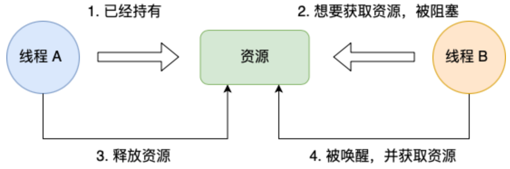
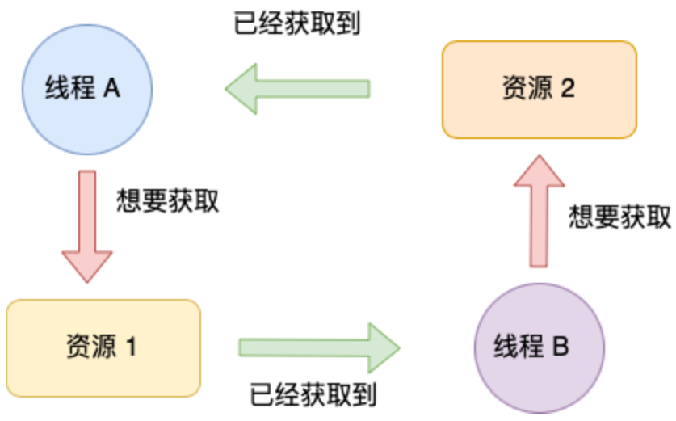
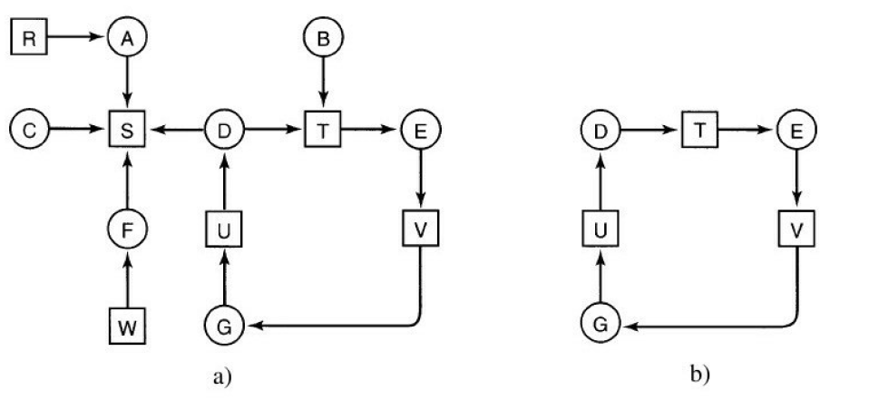
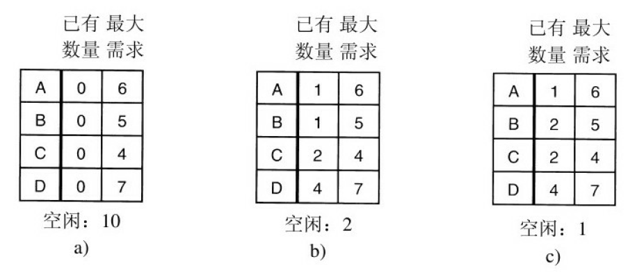
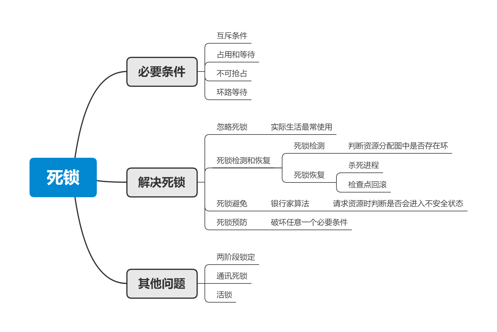

死锁和处理死锁
1. 死锁
1.1 定义
死锁的定义是：如果一个进程/线程集合中的每个进程/线程都在等待只能由该集合中其他进程/线程才能引发的事件，那么该集合是死锁的。
在大多数情况下，这个事件是释放占用的资源，换句话说，死锁就是进程/线程集合中的每个进程/线程都在等待被占用的资源，都不能被唤醒运行。
很容易用 java 实现死锁：
1 | public class DeadLock { |
1.2 死锁条件
计算机科学家们总结了死锁的 4 个必要条件：
- 互斥条件：资源只能被分配给一个进程/线程；
- 占用和等待：已经得到某个资源后，该进程/线程可以再请求其他资源；
- 不可抢占：资源只能自愿释放；
- 环路等待：系统中有两个或两个以上的进程/线程组成环路，该环路上的每个进程/线程都在等待下一个进程/线程占用的资源。


2. 解决死锁
对于死锁，通常有 4 种处理策略：
- 忽略
- 检测并恢复
- 死锁避免
- 死锁预防
2.1 忽略
最简单的解决方案是鸵鸟算法，把头埋到沙子里，假装根本没有问题发生，即忽略死锁问题。
对于数学家而言，这种方案往往无法接受，但对于工程师而言，如果死锁出现的概率很低，或者很长时间才会出现一次，并且能用重启的方式解决该问题， 那么完全可以忽略不管。
实际上，由于忽略死锁的代价最小，虽然对解决死锁问题没有任何帮助，但却是最广泛使用的手段。通用操作系统例如 Windows 和 Linux 都忽略了死锁。
2.2 检测和恢复
死锁检测和恢复并不阻止死锁的发生，而是当检测到死锁发生后，采取措施进行恢复。
2.2.1 死锁检测
假设每个类型只有一个资源，那么我们就可以构造一个资源分配图，例如 A 进程持有 R 资源，且需要 S 资源，那么图中便有 R -> A 和 A-> S 的路径，那么死锁检测便转化为了判断图中是否存在环，可以采用深度优先搜索、拓扑排序等算法进行判断。

图 (a) 即为系统中的资源分配图，而图 (b) 展示了图中存在的环，此时系统发生了死锁。
对于多种相同资源的死锁检测，需要基于矩阵和向量判断，感兴趣的读者可以阅读《现代操作系统》6.4.2 小节。
那么何时检测死锁呢？一种方案是每次资源分配就进行检测，优点是检测及时，但显然会极大增加资源分配的时间；另一种方案是固定时间间隔或者等 CPU 的使用率降到一定阈值进行检测。
2.2.2 死锁恢复
死锁恢复通常有两个手段：
- 杀死环中的进程：如果幸运的话，杀死环中的一个进程，其他进程就可以运行了。如果行不通的话，则继续杀死进程直到死锁被打破；
- 回滚：周期性的设置检查点，在检查点中保存进程的状态，包括资源状态和资源分配情况。当发生死锁时，恢复到上一个检查点运行，遗憾的是，这个检查点之后的工作将全部失去。
2.3 死锁避免
死锁避免的常用算法是银行家算法，由 Dijkstra 提出。该模型基于一个小镇的银行家，向客户分别承诺了一定贷款额度，当每个客户发起贷款请求时，需要判断该请求是否会进入不安全状态，如果是便拒绝该请求。那么什么是安全状态呢？假设 4 个客户 A、B、C、D，分别的贷款额度是 6、5、4、7，银行家只保留 10 的资源，针对下图三种情况进行分析：

- (a) 中所有贷款都未被分配，是安全状态；
- (b) 中银行家可以拖延 C 以外的贷款请求，让 C 先完成，等到 C 还贷后得到 4 个单位资源，可以继续给 B 或者 D 分配所需的贷款，因此该状态是安全的；
- (c) 中银行家无法满足任何一个客户的最大贷款，因此该状态是不安全的。
将上述的银行家比作操作系统，客户比作进程，贷款比作资源，那么银行家算法就可以避免进程的死锁。
上述举例针对的是单个资源的情况，银行家算法可以推广处理多个资源，在 《现代操作系统》6.5.4 小节进行了介绍。
2.4 死锁预防
死锁预防思想是破坏死锁的 4 个必要条件中的任意一个。
破坏互斥条件
如果资源不被一个进程独占，那么死锁便不会发生，但锁之类的资源从语意上就是互斥的，对于这类资源这个方案无法执行。
破坏占用和等待
只要禁止持有资源的进程进行等待便可以消除死锁，一个方法是规定所有进程再执行前获取所有的资源，但这个方案有以下问题：
- 很多进程直到运行时才知道需要的资源，无法提前分配；
- 大量资源被一个进程持有但不使用，造成浪费。
破坏不可抢占
大量的资源被设计为不可抢占的，无法进行破坏。
破坏环路等待
对资源类型进行排序，资源申请必须按序进行，不会出现环路等待，缺点是仍然造成资源浪费。
3. 其他问题
3.1 两阶段加锁
在数据库中，一个经常的操作是请求锁住一些记录，然后更新所有锁住的记录，当同时有多个进程运行时，就有死锁的危险。
常用的方法是两阶段加锁，第一阶段对所需的记录进行加锁，加锁成功才进入第二阶段更新，更新完成后释放所有的锁。
例如 MySQL InnoDB 中的行锁，在事务中第一次更改数据时进行加锁，等到事务结束才会释放所有的锁。
3.2 通信死锁
上述的死锁都是针对资源而言，但资源死锁只是最普遍的一种，但不是唯一的一种。另一种死锁发生在网络中，一个普遍情形是进程 A 向进程 B 中发送数据，然后阻塞直到 B 回复，假设消息丢失，A 将阻塞等待 B 的回复，B 将阻塞等待 A 的数据，于是发生了死锁。
TCP 通过超时重传解决了上述问题。
3.3 活锁
在某些场景下，进程通过轮询获取资源，获取失败不会挂起，而是重新尝试。假设进程 A 和进程 B 都需要两个资源 1 和 2，并且都是通过轮询去获取资源，如果 A 先运行获得资源 1，然后 B 获得资源 2，并通过轮询去获取对方的资源。
结果是两个进程都不会阻塞，但是会不断消耗 CPU 分给它们的时间片，但是没有任何进展，从现象上看好像死锁发生了。这个现象被称为活锁。
4. 总结
上面介绍了死锁的产生条件和解决手段，不幸的是，解决死锁更多是学术上的研究，这些解决手段或多或少都存在一定问题，在实际中很少使用。实际开发还是需要程序员精心设计程序，减少死锁的发生，或在死锁发生时运用工具分析解决，在 Java 中可以使用 jconsole 或者 VisualVM 进行排查。
